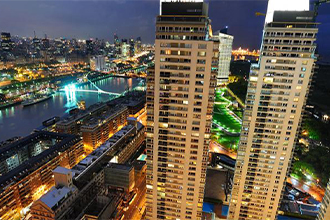
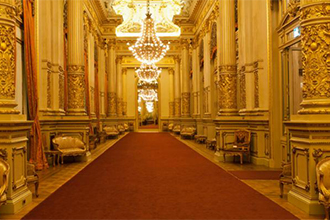
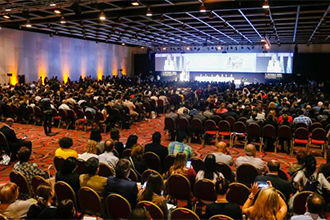
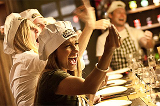
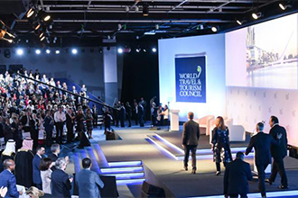
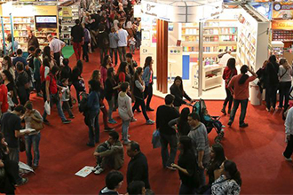

Turismo de Reuniones
Empresas y organizaciones eligen Buenos Aires para sus encuentros, cautivados por su cultura, gastronomía e infraestructura

La ciudad de tu evento
Todo lo que necesitás saber para realizar tu evento en la Ciudad de Buenos Aires.
Ver más

Sedes emblemáticas
La ciudad también ofrece importantes sedes icónicas con impronta porteña.
Ver más

Asociaciones
Los eventos que se realicen en la ciudad pueden contar con auspicio del Ente de Turismo.
Ver más

Corporativos
La ciudad ofrece ideas creativas y oportunidades únicas para eventos corporativos y viajes de incentivo.
Ver más

Centro de Congresos
La Ciudad es reconocida como una de las más importantes a nivel organizacional.
Ver más

Auspicio del Ente de Turismo
Conocé los requisitos necesarios para acceder a las diversas colaboraciones que el Ente otorga.
Ver más